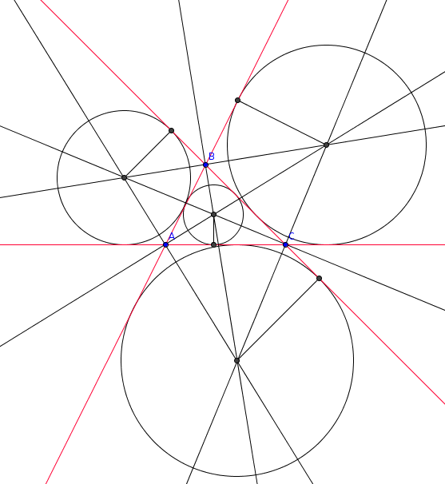

| Choisissez votre langue ! | Choose your language ! |
Soit ABC un triangle.
L'intérieur du triangle est défini comme l'intersection de 3 demi plans :
- le demi plan déterminé par la droite (AB) où se trouve le sommet C
- le demi plan déterminé par la droite (AC) où se trouve le sommet B
- le demi plan déterminé par la droite (BC) où se trouve le sommet A
- La bissectrice 'intérieure' (de sommet A) est celle qui coupe le côté [BC].
- La bissectrice 'extérieure' est l'autre.
Démontrer que les trois bissectrices intérieures d'un même triangle sont concourrantes.
Démontrer que chaque bissectrice intérieure est concourante avec les deux autres bissectrices extérieures.
Quelles sont les propriétés des points de concours ?
aide
Si un point est équidistant des droites (AB) et (AC) d'une part et des droites (AC) et (BC) d'autre part alors il est équidistant des droites (AB) et (BC).
Voir également
solution

Le point de concours des bissectrices intérieures est un point situé à l'intérieur du triangle ABC.
C'est le centre d'un cercle tangent intérieurement aux trois côtés (AB),(AC),(BC), le cercle inscrit.
Chaque bissectrice intérieure est concourrante avec les deux autres bissectrices extérieures en un point qui est centre d'un cercle tangent extérieurement aux trois côtés (cercle exinscrit).
Let ABC be a triangle.
The interior of the triangle is defined as the intersection of 3 half-planes:
- the half-plane determined by the line (AB) where vertex C is located
- the half-plane determined by the line (AC) where vertex B is located
- the half-plane determined by the straight line (BC) where vertex A is located
- The 'inner' bisector (with vertex A) is the one that intersects side [BC].
- The 'outer' bisector is the other one.
Prove that the three interior bisectors of the same triangle are concurrent.
Prove that each interior bisector is concurrent with the other two exterior bisectors.
What are the properties of the intersection points?
hint
If a point is equidistant from the lines (AB) and (AC) on the one hand and from the lines (AC) and (BC) on the other hand then it is equidistant from the lines (AB) and (BC).
See also
solution
The point of intersection of the interior bisectors is a point located inside the triangle ABC.
It is the center of a circle tangent internally to the three sides (AB),(AC),(BC), the 'inscribed' circle (or incircle).
Each interior bisector is concurrent with the other two exterior bisectors at a point which is the center of a circle tangent externally to the three sides (excircle).
|
Création Gilles Dubois - licence CC-BY-SA
Created by Gilles Dubois - licence CC-BY-SA
|
Septembre 2023
September 2023
|
Version mobile Jquery
Mobile Jquery version
|
|